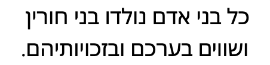
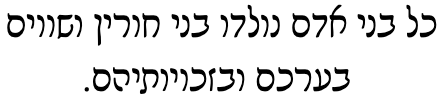
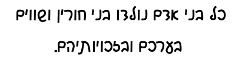
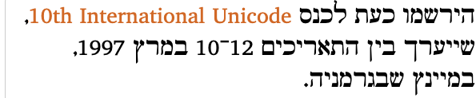
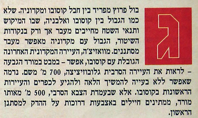
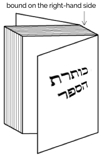

This page gathers together basic information about the Hebrew script and its use for the modern Hebrew language. It aims (generally) to provide an overview of the orthography and typographic features, and (specifically) to advise how to write Hebrew using Unicode.
See also the companion document, Hebrew character notes, for detailed information about specific Unicode characters.
Phonetic transcriptions on this page should be treated as an approximate guide, only. Many are more phonemic than phonetic, and there may be variations depending on the source of the transcription. See also phonology.
Select part of this sample text to show a list of characters, with links to more details. Change size: 28px
סעיף א. כל בני אדם נולדו בני חורין ושווים בערכם ובזכויותיהם. כולם חוננו בתבונה ובמצפון, לפיכך חובה עליהם לנהוג איש ברעהו ברוח של אחוה.
סעיף ב. כל אדם זכאי לזכויות ולחרויות שנקבעו בהכרזש זו ללא הפליה כלשהיא מטעמי גזע, צבע, מין, לשון, דח, דעה פוליטית או דעה בבעיות אחרות, בגלל מוצא לאומי או חברתי, קנין, לידה או מעמד אחר. גדולה מזו, לא יופלה אדם על פי מעמדה המדיני, על פי סמכותה או על פי מעמדה הבינלאומי של המדינה או הארץ שאליה הוא שייך, דין שהארץ היא עצמאית, ובין שהיא נתונה לנאמנות, בין שהיא נטולת שלטון עצמי ובין שריבונותה מוגבלת כל הגבלה אחרת.
Usage & history
The Hebrew script is widely used by the Jewish community and is used to write modern Hebrew in Israel. It is the script used for Jewish sacred texts. It is also used for a number of other languages, including Samaritan, Yiddish, and Judeo-Arabic.
Names:
אָלֶף־בֵּית עִבְרִיalefbet ivri Hebrew alphabet.
Before the Jewish exile in Babylon, Hebrew was written using a Paleo-Hebrew script that ressembles the Samaritan alphabet. The current script, known as 'square', or 'block' script, derives from Aramaic writing. It is generally referred to as the Ashuri (Assyrian) script, although there are a few alternate writing styles. It dates from the 5th century BCE.
Hebrew is an abjad. This means that in normal use the script represents only consonants. This approach is helped by the strong emphasis on consonant patterns in Semitic languages. See the table to the right for a brief overview of features for the modern Hebrew orthography. (See the key. Character counts exclude ASCII characters.)
Where needed for clarifying ambiguity or educational purposes, it is possible to indicate the vowel sounds using 'points', ie. combining marks that attach to the consonant letters. Some consoant letters are also used as matres lectionis, ie. they indicate the location of a vowel.
Hebrew text is written from right to left, but becomes bidirectional when numbers or text from other writing systems (such as Latin acronyms) are embedded in the text. Numbers and expressions flow from left to right.
Notes on phonology
Modern Israeli Hebrew was born from speakers who brought their own accents and pronunciations from different parts of the world. There are still variations in pronunciation, but two main types predominate today: Oriental and Occidental. Oriental Hebrew was chosen as the preferred accent for Israel by the Academy of the Hebrew Language, but has since declined in popularity. Age is often a factor in individual pronunciation.w
In particular, there are alternative pronunciations for x~ħ, ʁ~r, ʔ~ʕ. In this document we use the left-hand side of each of these pairings.
Younger speakers also tend to make all consonants in a cluster voiced or unvoiced, depending of the last consonant, eg. לִסְגֹּרlisᵊgoˑʁlis'ɡoʁto close becomes liz'ɡoʁ, and אַבְטָחָהʔavᵊtāxāhavta'xasecurity becomes afta'xa.
Hebrew script is written right-to-left in the main, but as with all RTL scripts, numbers and embedded LTR script text are written left-to-right (bidirectional text). In the following example, the Hebrew words are read right-to-left, starting with the one on the right, and the numeric expression ("10-12") is read left-to-right, ie. it starts with 10 and ends with 12. (Note that this is unlike Arabic, where the 10 and 12 would be in opposite positions.)
התאריכים 12־10 במרץ
Bidirectional Hebrew text.
The Unicode Bidirectional Algorithm automatically takes care of the ordering for all the text in fig_bidi, as long as the 'base direction' is set to RTL. In HTML this can be set using the dir attribute, or in plain text using formatting controls.
If the base direction is not set appropriately, the directional runs will be ordered incorrectly as shown in fig_bidi_no_base_direction, and can become unreadable.
ב־HMTL5 זה מתבצע על ידי הוספת אלמנט ה־inline bdo.
ב־HMTL5 זה מתבצע על ידי הוספת אלמנט ה־inline bdo.
The exact same sequence of characters with the base direction set to RTL (top), and with no base direction set on this LTR page (bottom).
On this page, see also expressions and linebreak for additional features related to direction.
Character lists show:
Vowels
Hebrew has diacritics that can be used to express short vowel sounds, but rarely uses them in normal text. Hebrew readers are usually able to understand the pronunciation from the context and the regular structure of Hebrew words.
Certain consonant letters, referred to as matres lectionis, may indicate the location of vowels in pointed and unpointed text.
Vowel sounds
Click on the sounds to reveal locations in this document where they are mentioned.
Phones in a lighter colour are non-native or allophones. Sourcewp.
A series of points, known as niqqud, can be used to give precision about vowel sounds. They are rarely used outside of educational, children's, and religious texts, or for foreign or ambiguous words.
אָלֶף־בֵּית עִבְרִי
'Hebrew alphabet', alef-bet ivri, spelled out using diacritic points.
These are the niqqud used for modern Hebrew.
ִ␣ֻ␣ֵ␣ֶ␣ֱ␣ֹ␣ֳ␣ְ␣ָ␣ַ␣ֲ
Redundancy arises because the modern orthography retains alternative points that in the past expressed length differences. Modern Israeli Hebrew pronunciation ignores phonetic length.
Three of the above code points have glyphs that combine ְ [U+05B0 HEBREW POINT SHEVA] (sh'va) and another point (used to indicate shortened lengths in older Hebrew). A single Unicode code point (that doesn't decompose during normalisation) is used for each of these combinations. Authors should not attach multiple vowel code points to a single consonant letter.
Matres lectionis
Hebrew uses the following consonant letters to indicate the location of a vowel.
א␣ע␣ו␣י
The first two are silent vowel supports, whereas the second two are considered to be part of the vowel.
There is a trend in Modern Hebrew towards the use of matres lectionis to indicate vowels that have traditionally gone unwritten, a practice known as full spelling.w
These are the basic consonant letters used in modern Hebrew.
א␣עט␣ת␣ד␣ק␣גצפ␣ב␣ו␣ש␣ס␣ז␣ח␣כ␣ר␣המ␣נל␣י
Word-final shapes. Five letters have special word-final forms, called sofit. They are encoded as separate code points in Unicode, and appear as separate keys on a keyboard, so no special processing is needed to display or store them (unlike Arabic).
ץ␣ף␣ך␣ם␣ן
Foreign words and names may sometimes use the normal forms at the end of a word, rather than the sofit form. In those cases, use the non-final code points.
Matres lectionis. Three of the letters can also represent vowel locations. See matres.
Repertoire extensions
Methods used to modify the sound of a consonant.
Dagesh.ּ [U+05BC HEBREW POINT DAGESH OR MAPIQ] is used in pointed text with 3 consonant letters (and one final form) to indicate that they map to 'hard' sounds. This is similar to the distinction made in Syriac. Dagesh is the only diacritic to appear inside a consonant. Below, the hard sounds are shown to the left, and the normal to the right.
פּ␣בּ␣כּ␣ךּ␣ ␣פ␣ב␣כ␣ך
Dagesh can also be found alongside other letters, without any sound change, due to preservation of archaic spelling. The pairs t–θ, d–ð and ɡ–ɣ were lost over time, leaving:
תּ␣דּ␣גּ
Shin & sin dots. The two phonemes s and ʃ are represented by a single consonant letter, ש [U+05E9 HEBREW LETTER SHIN]. If it is necessary to indicate which is intended, two diacritics used only with this character, do the job: ׂ [U+05C2 HEBREW POINT SIN DOT] and ׁ [U+05C1 HEBREW POINT SHIN DOT]. They look identical apart from the side to which they are positioned.
The Unicode Hebrew block contains the following additional characters with the general property of letter.
ׯ␣ױ␣ײ␣װ
Three of these are digraphs used for Yiddish.
Combining marks
Combining characters used in modern Israeli Hebrew include the following types of diacritic:
Vowel points. With two exceptions, these appear below the consonant (see niqqud).
Consonant modifiers, dagesh, and the shin/sin dots. The former occur inside the consonant; the latter appear above (see consonant_extensions).
These are only rarely used for normal Hebrew text.
Vowel points are all combining marks, and include the following (see niqqud).
ִ␣ֵ␣ֶ␣ַ␣ָ␣ֹ␣ֻ␣ְ␣ ␣ֱ␣ֲ␣ֳ
The following combining marks are used to alter the sound of a consonant (see consonant_extensions).
ּ␣ׁ␣ׂ
In Biblical and older Hebrew texts, additional diacritics can be attached to the base character, including many cantillation marks. The following list shows the other combining characters in the Unicode Hebrew block.
Geresh is also used (a) to change the sound of a consonant (see consonant_extensions), (b) to indicate numbers represented by Hebrew letters. and (c) as a cantillation mark.
The Hebrew block contains a number of other punctuation marks that are only used for liturgical texts.
׀␣׃␣׆
Numbers
Hebrew uses european digits.
For about a thousand years from the 2nd century BC, Hebrew used letters as numbers. Nowadays, they are only used this way for the Hebrew calendar, for school grades, for counter styles, and in religious contexts.
Currency
The denomination is generally expressed by the abbreviation ש״ח, meaning new sheqel, and standing for sheqel ẖadash.w
₪
₪ [U+20AA NEW SHEQEL SIGN] may also be used. It is displayed to the left of the amount, with no separation or with a thin space, eg. ₪12,000. (Wikipedia says that this requires the sheqel sign to be typed after the amount, however, the opposite is the case for all major browsers.)w
Glyph shaping & positioning
The Hebrew script is not usually cursive (ie. joined up) when printed.
The script is unicameral and needs no transforms to convert between code points.
The standard, 'square script' is derived from Aramaic. There are serif and sans-serif fonts.

Serif (top) and sans (bottom) examples of the standard writing style.
The STAM style is used for sacred texts such as the Torah. Certain letters have decorative tags above.s
Text written in the STAM writing style.
The rashi style is used for commentaries on sacred texts. Letters have a more rounded, almost cursive style.s

Text written in the rashi writing style.
Hebrew also has a 'cursive' style, which means 'handwriting' style. Letters are not normally joined. Cursive fonts are only used as display fonts. Many glyphs look very different from the standard letter forms.

Text written in the 'cursive' writing style.
Before the Babylonian exile (from which the square script derives), Hebrew was written with different shapes, which are similar to those used for Samaritan.
Context-based shaping
In Hebrew several characters have a different shape at the end of a word, but each shape variant has it's own codepoint and keyboard key, so there is no need for rendering rules to choose the correct glyph.
In NFC normalised text, a dagesh or shin/sin dot always follows the vowel diacritic. It may be necessary to reorder the diacritics for some applications, eg. for transcriptions that map a consonant+dagesh to a single letter.
Baselines & inline alignment
Hebrew uses the so-called 'alphabetic' baseline, which is the same as for Latin and many other scripts.
Font styles
Bold text is used as one way to highlight or emphasise text. The degree of bolding is often quite light. Bold-italic is typically only used for large display text.l
Italics may also be used, however its use is not abundant, and many of the italic faces in fonts are designed for display use, rather than to accompany a regular font.l
There are different preferences for the direction of the slant for italicised Hebrew text. The choice as to which is preferred appears to be down to the individual, and is a question of whether the slant matches the direction of the Hebrew text, or embedded Latin text.l
Example of forward-leaning italics (bottom).
Structural boundaries & markers
Grapheme boundaries
Hebrew typographic units consist of base characters, optionally followed by one or more combining marks. Unicode grapheme clusters can be applied to Hebrew without problems. There are no special issues related to operations that use grapheme clusters as their basic unit of text.
However, it is less common online because it is not always easily available on keyboards. Therefore, - [U+002D HYPHEN-MINUS] is often substituted, even though the position of that character is too low when displayed.w
The Unicode Standard indicates that lines should not break on either side of the maqaf.g
In the Bible, maqaf is primarily associated with cantillation marks and indicates a combination of 2 or more words that are pronounced in one breath.g
Phrase & section boundaries
Hebrew uses ASCII punctuation for the most part. Full stops, question marks, exclamation marks, and commas are used as in English. There are 6 additional punctuation characters in the Hebrew Unicode block.
Note that the direction of the question mark (?) is the same as in English, and unlike Arabic. The same is true for the comma ( , ).
Hebrew uses the same parentheses as English, and uses ( [U+0028 LEFT PARENTHESIS] at the start (right) and ) [U+0029 RIGHT PARENTHESIS] at the end (left).wc These are mirrored characters in Unicode, so the glyph for each character is automatically reversed in RTL text.
For example, click on the following to see the component characters, (חדשה) (the first character is the paren on the right). The consequence of this is that, when writing Hebrew, the parentheses should be used as if they were named U+0028 START PARENTHESIS and U+0028 END PARENTHESIS, respectively.
Up to around 1970 Hebrew used „ [U+201E DOUBLE LOW-9 QUOTATION MARK] instead for the initial quotation mark, ie. „ישראל”, but this changed, partly due to inadequate keyboard designs.w
Emphasis
Increased tracking is a common way to express emphasis in Hebrew.
The last part of this text is stretched to show emphasis.
Aternatives include the use of a different typeface, and/or underlining.l
Due to keyboard inadequacies, these are often replaced by ASCII single and double quote characters, even though in general they are visually too high.
Inline notes & annotations
tbd
Other inline ranges
Text can be highlighted using bold, italic, different fonts, font sizing, colour, or tracking.
Other punctuation
tbd
Line & paragraph layout
Line breaking & hyphenation
Lines are normally broken at word boundaries.
Like most writing systems, certain characters are expected not to start or end a line. For example, periods and commas shouldn't start a line, and opening parentheses shouldn't end a line.
Breaking between Latin words. When a line break occurs in the middle of an embedded left-to-right sequence, the items in that sequence need to be rearranged visually so that it isn't necessary to read lines from top to bottom.
latin-line-breaks shows how two Latin words are apparently reordered in the flow of text to accommodate this rule. Of course, the rearragement is only that of the visual glyphs: nothing affects the order of the characters in memory.

The lower of these two images shows the result of decreasing the line width, so that text wraps between a sequence of Latin words.
Character properties
Characters used for the modern Israeli Hebrew language have the following assignments related to line-break properties.
AL
2
״ ׳
BA
1
־
CM
14
ִ ֵ ֶ ַ ָ ֹ ֻ ְ ֱ ֲ ֳ ּ ׁ ׂ
HL
27
א ב ג ד ה ו ז ח ט י כ ל מ נ ס ע פ צ ק ר ש ת ך ם ן ף ץ
AL (ordinary alphabetic and symbol characters) requires other characters to provide break opportunities; otherwise, unless tailored rules are applied, no line breaks are allowed between pairs of them.
BA (break after) indicates that it is normal to break after that character.
HL (Hebrew letter) includes all Hebrew letters. When a Hebrew letter is followed by a hyphen, there is no break on either side of the hyphen.
PR (numeric prefix) may not be separated from following numeric characters or following opening characters, even if a space character intervenes. For example, there is no break opportunity in “฿ (100.00)”.
Text alignment & justification
tbd
Letter spacing
Increased tracking is a common way to express emphasis in Hebrew.
Examples of letter-spacing (highlighted by the red lines) in Hebrew text.
The hebrew additive style uses the letters shown below. It is specified for a range between 1 and 10,999. This system manually specifies the values for 19-15 to force the correct display of 15 and 16, which are commonly rewritten to avoid a close resemblance to the Tetragrammaton. Implementations may, and some do, implement this manually to a higher range.
It is possible to find the first letter in a paragraph styled so that it is larger and sits alongside several lines of the continuing paragraph text.
An enlarged initial letter in the word לפגי at the beginning of a paragraph.
Observation: The glyph in fig_drop_cap rises above the normal top line of most Hebrew characters. It also rises above the top line of the adjacent glyphs when positioned alongside them. The bottom of the glyph is aligned with the bottom of the glyphs on the 3rd line down.
Boxed initials can also be found, such as the one in fig_drop_cap_box.
Here, the initial letter is centred horizontally and vertically inside the space created by the box. The box extends from the top line of the first line of text to the baseline of the 6th line.

An enlarged initial letter in the word גבול at the beginning of a paragraph, set in a box.
Page & book layout
General page layout & progression
Hebrew books, magazines, etc., are bound on the right-hand side, and pages progress from right to left.

Binding configuration for Hebrew books, magazines, etc.
Columns are vertical but run right-to-left across the page.
Grids & tables
tbd
Notes, footnotes, etc
tbd
Forms & user interaction
tbd
Page numbering, running headers, etc
tbd
Character lists
Version 13.0 of the Unicode Standard has the following block dedicated to the Hebrew script: